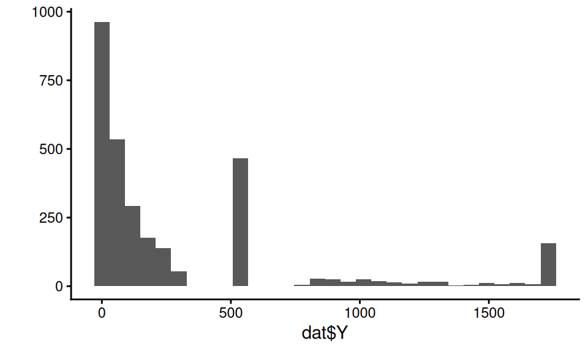
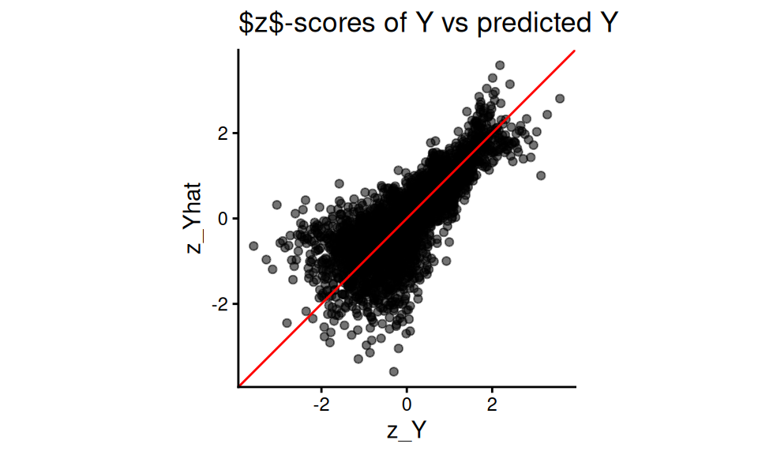
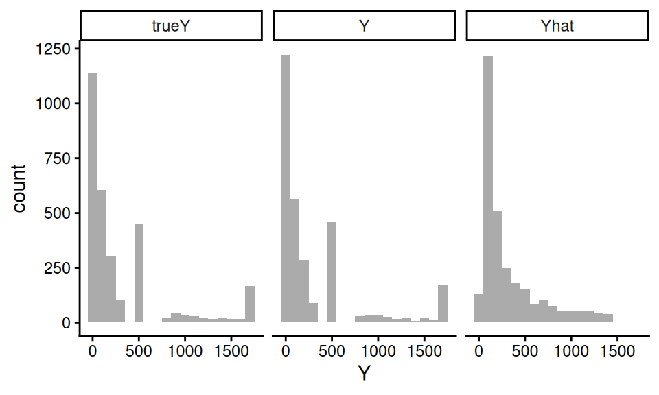

Chapter 16 Simulations as evidence
We began this book with an acknowledgement that simulation is fraught with the potential for misuse: simulations are doomed to succeed. We close this part by reiterating this point, and then discussing several ways researchers might design their simulations so they more arguably produce real evidence.
When our work is done, ideally we will have generated simulations that provide a sort of “consumer product testing” for the statistical methods we are exploring. Clearly, it is important to do some consumer product tests that are grounded in how consumers will actually use the product in real life—but before you get to that point, it can be helpful to cover an array of conditions that are probably more extreme than what will be experienced in practice (simulations akin to dropping things off buildings or driving over them with cars or whatever else). For simulation, extreme levels of a factor make understanding the role they play more clear. Extreme contexts can also help lay bare the limits of our methods.
“Extreme” can go in both the good and bad directions. Extreme contexts can include best-case (or at least optimistic) scenarios for when our estimator of interest will excel, giving a nominal upper bound on how well things could go. Usually extreme simulations are simple ones, with fairly straightforward data generating processes that do not attempt to capture the complexities of real data. Such extreme simulations might be considered overly clean tests.
Extreme and clean simulations are also usually easier to write, manipulate, and understand. Such simulations can help us learn about the estimators themselves. For example, we can use simulation to uncover how different aspects of a data generating process affect the performance of an estimator. To discover this, we would need a data generation process with clear levers controlling those aspects. Simple simulations can be used to push theory further—we can experiment to gain an inclination of whether a novel approach to something is a good idea at all, or to verify we are right about an intuition or derivation about how well an estimator can work.
But such simulations cannot be the end of our journey. In general, a researcher should work to ensure their simulation evidence is relevant. The evidence should inform how things are likely to work out in practice. A set of simulations only using unrealistic data generating processes may not be that useful. Unless the estimators being tested have truly universally stable properties, we will not learn much from a simulation if it is not relevant to the problem at hand. After exploring the overly extreme or overly clean, we have to circle back to providing testing of the sorts of situations an eventual user of our methods might encounter in practice. So how can we make our simulations more relevant?
In the following subsections we go through a range of general strategies for making relevant simulations:
- Break symmetries and regularities.
- Use extensive multi-factor simulations.
- Use simulation DGPs from prior literature.
- Pick simulation factors based on real data.
- Resample real data directly to get authentic distributions.
- Design a fully calibrated simulation.
16.1 Break symmetries and regularities
In a series of famous causal inference papers (Lin 2013; Freedman 2008), researchers examined when linear regression adjustment of a randomized experiment (i.e., when controlling for baseline covariates in a randomized experiment) could cause problems. Critically, if the treatment assignment is 50%, then the concerns that these researchers examined do not come into play, as asymmetries between the two groups get perfectly cancelled out. That said, if the treatment proportion is more lopsided, then under some circumstances you can get bias and invalid standard errors, depending on other structures of the data.
Simulations can be used to explore these issues, but only if we break the symmetry of the 50% treatment assignment. When designing simulations, it is worth looking for places of symmetry, because in those contexts estimators will often work better than they might otherwise, and other factors may not have as much of an effect on performance as anticipated.
Similarly, in recent work on best practices for analyzing multisite experiments (Miratrix, Weiss, and Henderson 2021), we identified how different estimators could be targeting different estimands. In particular, some estimators target site-average treatment effects, some target person-average treatment effects, and some target a kind of precision-weighted blend of the two. To see this play out in practice, our simulations needed the sizes of sites to vary, and also the proportion of treated within site to vary across sites. If we had run simulations with equal site size or equal proportion treated, we would not see the broader behavior that separates the estimators considered.
Overall, it is important to make your data generation processes irregular.
16.2 Use extensive multi-factor simulations.
“If a single simulation is not convincing, use more of them,” is one principle a researcher might take. By conducting extensive multifactor simulations, once can explore a large space of possible data generating scenarios. If, across the full range of scenarios, a general story bears out, then perhaps that will be more convincing than a narrower range.
Of course, the critic will claim that some aspect of your DGP that is not varying is the real culprit. If this aspect is unrealistic, then the findings, across the board, may be less relevant. Thus, pick the factors one varies with care, and pick factors in anticipation of reviewer critique.
16.3 Use simulation DGPs from prior literature.
If a relevant prior paper uses a simulation to make a case, one approach is to replicate that simulation, adding in the new estimator one wants to evaluate. In effect, use previously published simulations to beat them at their own game. Using an established DGP makes it (more) clear that you are not fishing: you are using something that already exists in the literature as a published benchmark. By constraining oneself to published simulations, one has less wiggle room to cherry pick a data generating process that works the way you want. Indeed, such a benchmarking approach is often taken in the machine learning literature, where different canonical datasets are used to benchmark the performance of new methods.
16.4 Pick simulation factors based on real data
Use real data to inform choice of factor levels or other data generation features. For example, in James’s work on designing methods for meta-analysis, there is often a question of how big simulated sample sizes should be and how many different simulated outcomes per study there should be when generating sets of hypothetical studies to be included in hypothetical meta-analyses. In one project, to make such simulations realistic, James obtained data from a set of past real meta-analyses and fit parametric models to these features, and then used the resulting parameter estimates as benchmarks for how large and how varied the simulated meta analyses should be.
When doing this, we recommend not using the exact estimated values, but instead using them as a point of reference. For instance, say we find that the distribution of study sizes fits a Poisson(63) pretty well. We might then then simulate study sizes using a Poisson with mean parameters of 40, 60, or 80 (where 40, 60, and 80 would be one factor in our multifactor experiment).
16.5 Resample real data directly to get authentic distributions
You can also use real data directly to avoid a parametric model entirely. For example, say you need a population distribution for a slew of covariates. Rather than using something artificial (such as a multivariate normal), you can pull population data on a bunch of covariates from some administrative data and then use those data as a population distribution. You then sample (probably with replacement) rows from your reference population to generate your simulation sample.
The appeal here is that your covariates will then have distributions that are much more authentic than some multivariate normal–they will include both continuous and categorical variables, they will tend to be skewed, and they will be correlated in different ways that are more interesting than anything someone could make up.
Long and Ervin (2000) used an approach like this in their study of heteroscedasticity-robust standard errors. They wanted to explore how well these standard errors worked in practice, with a focus on how high leverage points could undermine their effectiveness. Leverage is purely a function of the covariate distribution, so they needed to have an authentic covariate distribution in order to properly explore this issue. Generating realistic leverage is hard to do with a parametric model, so instead they used examples from real life to make the simulation more relevant.
16.6 Fully calibrated simulations
Extending some of the prior ideas even further, one practice in increasing vogue is to generate calibrated simulations. See Kern et al. (2014) for an example of this in the context of generalizing experiments. This paper has one of the earliest uses of this term, as far as we know.
A calibrated simulation is one that is tailored to a specific applied context, with a DGP that is close to what we think the real world is like in that context. Usually, this means we try to generate data that looks as much like a target dataset as possible, with the same covariate distributions and the same relationships between covariates and outcomes. These simulations are not particularly general, but instead are designed to more narrowly inform what how well things would work for a particular circumstance.
Once we have a fully calibrated DGP, targeting a specific dataset, we can then modify it by adjusting sample sizes or other aspects to explore a space of DGPs that are all connected to this core initial calibrated DGP. We can thus still build more general evidence, but the evidence will always be anchored by our initial target.
We usually would build a calibrated simulation out of existing data. As discussed in the prior section, we might start with sampling from the covariate distribution of an actual dataset so that the distribution of covariates is authentic in how the covariates are distributed and, more importantly, how they co-relate.
But this is not far enough. We also need to generate a realistic relationship between our covariates and outcome to truly assess how well the estimators work in practice. It is very easy to accidentally put a very simple model in place for this final component, thus making a calibrated simulation quite naive in, perhaps, the very way that counts.
One approach to get a more realistic model between covariates and outcomes is to fit a flexible model to the original data, and then use the model to predict outcomes from the covariates. One would then generate residuals to add to the predictions, ideally in a way that preserves the heteroscedasticity and overall outcome distribution of the original data. For example, in the subsection below, we provide a copula based approach to doing this, which ensures the outcome distribution is in line with the original data while allowing control over how tightly coupled the covariates are to the outcome. We do not say this is the only approach, but rather one of a large range of possibilities.
Clearly, these calibration games can be fairly complex. Calibrated simulations frequently do not lend themselves to a clear factor-based structure that have levers that change targeted aspects of the data generating process (although sometimes you can craft your approach to make such levers possible). In exchange for this loss of clean structure, we end up with a simulation that might be more faithfully capturing aspects of a specific context, making our simulations more relevant to answering the narrower question of “how will things work here?” even if they are less relevant for answering the question of “how will things work generally?”
16.7 Generating calibrated data with a copula
In this section, we borrow from a blog post25 to illustrate how to use copulas to generate data that is very calibrated to a target dataset. In this example, we will generate new observations \((X, Y)\), where \(X\) is a vector of covariates (some continuous, some categorical) and \(Y\) is a continuous outcome of an arbitrary distribution as described by a target dataset.
A copula is a mathematical device that is used to describe a multivariate distribution in terms of its marginals and the correlation structure between them, and we used it to generate new \(Y_i\) values based on the \(X_i\) in a way that maintained the same marginal distributions for all variables as the empirical dataset.
We found the copula to have several benefits. First, the copula approach can give a different \(Y\) for a given \(X\). By contrast, simply bootstrapping our empirical data (a common way to generate synthetic data that looks like an empirical target) would not achieve this. Second, we could control the tightness of the coupling between \(X\) and \(Y\), while maintaining a fairly complex and nonlinear relationship between \(X\) and \(Y\), and while maintaining possible heteroskedasticity found in the initial dataset.
To illustrate, we will use a (fake) dataset with four covariates, X1, X2, X3, and X4, and an outcome, Y. Here are a few rows of this “empirical” data that we are trying to match:
| X1 | X2 | X3 | X4 | Y |
|---|---|---|---|---|
| 3 | 1 | 6.52 | 2.07 | 1075.67 |
| 2 | 1 | 3.41 | 0.76 | 114.07 |
| 3 | 0 | 0.39 | 0.61 | 20.38 |
| 2 | 1 | 3.75 | 2.01 | 550.00 |
| 3 | 1 | 5.28 | 1.88 | 550.00 |
Our outcome in this case is a bit funky:

The covariates have a correlation structure with themselves and also Y. Here are the pairwise correlations on the raw values:
## X1 X2 X3 X4 Y
## X1 1.00 -0.21 0.35 0.81 0.54
## X2 -0.21 1.00 0.22 -0.17 0.19
## X3 0.35 0.22 1.00 0.29 0.65
## X4 0.81 -0.17 0.29 1.00 0.44
## Y 0.54 0.19 0.65 0.44 1.00We want to generate synthetic data that captures the correlation structure of our empirical data along with the marginal distributions of each covariate and outcome. We will do this via the following steps:
Steps for making data with a copula:
- Predict \(Y\) given the full set of covariates \(X\) using a machine learner.
- Tie \(\hat{Y}_i\) and \(Y_i\) together with a copula.
- Generate new \(X\)s (in our case, via the bootstrap).
- Generate a predicted \(\hat{Y}_i\) for each \(X_i\) using the machine learner.
- Generate the final, observed, \(Y_i\) using our copula.
16.7.1 Step 1. Predict the outcome given the covariates
We can use some machine learning model to make predictions of \(Y\) given \(X\). Here we use a random forest:
library(randomForest)
mod <- randomForest( Y ~ .,
data=dat,
ntree = 200 )
dat$Y_hat = predict( mod )Our predictive model for \(Y\) can be anything we want: we are just trying to get some predicted \(Y\) that is appropriately tied to the \(X\).
Our predictions will be under dispersed and not natural in appearance. For starters, the standard deviation of the \(\hat{Y}\) will be less than the original \(Y\), because our predictions are only getting at the structural aspects, not the residual noise:
tibble( sd_Yhat = sd( dat$Y_hat ),
sd_Y = sd( dat$Y ),
cor = cor( dat$Y_hat, dat$Y ) ) %>%
knitr::kable( digits = c(1,1,2) )| sd_Yhat | sd_Y | cor |
|---|---|---|
| 324.3 | 464.7 | 0.9 |
Our synthetic \(Y\) values will need to be “noised up” so they look more natural. We also want them to match the empirical distribution of our original data.
16.7.2 Step 2. Tie \(\hat{Y}\) to \(Y\) with a copula
The first step of the copula approach is to make a function that converts empirical data to normalized \(z\)-scores based on their percentile rank, as we will be doing all our data generation in “normal \(z\)-score space.” In other words, we take a value, calculate its percentile, and then calculate what \(z\)-score that percentile would have, if the value came from a standard normal distribution.
Here is a function to do this:
convert_to_z <- function( Y ) {
K = length(Y)
r_Y <- rank( Y, ties.method = "random" )/K - 1/(2*K)
z <- qnorm( r_Y )
z
}We calculate percentiles by ranking the values, and then taking the midpoint of each rank. If we had 20 values, for example, we would then have percentiles of 5%, 15%, …, 95%. (We can’t have 0 or 100% since this will turn into Infinity when converting to a \(z\)-score.)
Using our function, we convert both our \(Y\) and predicted \(Y\) to these normal \(z\)-scores:
z_Y = convert_to_z( dat$Y )
z_Yhat = convert_to_z( dat$Y_hat )
qplot( z_Y, z_Yhat, asp = 1, alpha=0.05 ) +
geom_abline( slope=1, intercept=0, col="red" ) +
labs( title = "$z$-scores of Y vs predicted Y" ) +
coord_fixed() +
theme( legend.position = "none" )
Note how the \(z\)-scores have smoothed our Y distribution due to the random ties, breaking up our spikes of identical values. We can then see how coupled the predicted and actual are:
## # A tibble: 1 × 3
## rho sd_Y sd_Yhat
## <dbl> <dbl> <dbl>
## 1 0.764 1.000 1.00016.7.3 Step 3. Get some new Xs
So far we are just modeling relationship in our original data. We next set the stage for generating a new dataset. We start with making more \(X\) values. A simple trick is to simply bootstrap the data, keeping the \(X\) only. We might, for example, generate a new dataset of 500 observations like so:
If we don’t want exact duplicates of the vectors of \(X\) values in our data, we can use other methods such as the synthpop package, which generates data based on a series of conditional distributions.
So we can check our work later, we are instead going to cheat and use a dataset, new_data that is generated from the same DGP as our original fake data.
It looks like so:
## # A tibble: 3,000 × 5
## X1 X2 X3 X4 trueY
## <dbl> <dbl> <dbl> <dbl> <dbl>
## 1 -1 1 2.21 -1.36 7.15
## 2 5 0 3.89 0.465 550
## 3 -1 1 4.40 -2.28 0.196
## 4 1 1 0.296 0.942 2.55
## 5 3 1 3.58 0.413 550
## 6 4 1 0.748 1.21 82.8
## 7 4 0 6.18 1.86 550
## 8 -1 1 2.93 0.0764 16.6
## 9 -1 0 0.595 -0.742 0.133
## 10 4 1 6.32 1.25 934.
## # ℹ 2,990 more rowsTo be very specific, trueY would not normally be in our data at this point; we have it here so we can compare our generated Y to the true Y to see how well our DGP is working.
In practice, we would not be able to do this: we would need to generate new \(X\) like shown above.
16.7.4 Step 4. Generate a predicted \(\hat{Y}_i\) for each \(X_i\) using the machine learner.
This step is quite easy:
Done!
16.7.5 Step 5. Generate the final, observed, \(Y_i\) using a copula that ties \(\hat{Y}_i\) to \(Y_i\).
Now we generate our new \(Y\) by converting our predictions (the Yhat) to the new \(Y\) via the copula. We are bascially using the same pieces that are in the \(z\)-score function, above.
We first generate the percentiles the Y-hats represent:
## Min. 1st Qu. Median Mean 3rd Qu.
## 0.0001667 0.2500833 0.5000000 0.5000000 0.7499167
## Max.
## 0.9998333We then convert the percentiles to the \(z\)-scores they represent:
## Min. 1st Qu. Median Mean 3rd Qu. Max.
## -3.5879 -0.6742 0.0000 0.0000 0.6742 3.5879We next use a formula for the conditional distribution of a normal variable given the other variable, namely, if \(X_1, X_2\) both have unit variance and mean zero, we use \[X_2 | X_1 = a \sim N( \rho a, 1 - \rho^2 ) .\] With this formula, we generate \(Y\) as so:
rho = cor( z_Y, z_Yhat ) # from our empirical
new_data$z_Y = rnorm( K,
mean = rho * new_data$z_Yhat,
sd = sqrt( 1-rho^2 ) )Now, finally, for each observation in z-space, we figure out what rank it would correspond to in our empirical distribution, and then take that empirical data point as the value:
empDist = sort(dat$Y)
K = length(empDist)
new_data$r_Y = ceiling( pnorm( new_data$z_Y ) * K )
new_data$Y = empDist[ new_data$r_Y ]And we are done!
16.7.6 How did we do?
Let’s explore results: did we end up with something “authentic”? We first compare the distribution of our generated \(Y\) to the true \(Y\) from the real DGP:

trueY and \(Y\) are very close! Note the Yhat is quite different, by contrast.
We further check our process by looking at how closely the correlations of our new Y with the Xs match the correlations of the true Y and the Xs:
| Variable | Y | trueY |
|---|---|---|
| X1 | 0.42 | 0.51 |
| X2 | 0.19 | 0.19 |
| X3 | 0.51 | 0.66 |
| X4 | 0.36 | 0.40 |
Our new Y roughly looks like the true Y, with respect to the correlation with the Xs. We gave our copula approach a hard test here–simpler covariate relationships will be better captured. That said, this doesn’t seem that bad.
16.7.7 Building a multifactor simulation from our calibrated DGP
In the above, we made a DGP that mimics, as closely as we can, the empirical data we are targeting. In an actual simulation, however, we would generally want to manipulate different aspects of our DGP to explore how different methods might function.
We offer some examples of how to do this for this context.
First, we can directly set rho to control how tightly coupled the outcome is to the covariates.
If rho is 0, then our outcome distribution will be exactly the same, but there would be no connection between it and the covariates.
For rho of 1, the outcome would be perfectly predicted by the predicted outcome, which is a function of the covariates.
The strength of the connection between \(X\) and \(Y\) is maximized.
Second, we can easily control sample size by generating larger or smaller datasets of \(X\) and then generating \(Y\) from those \(X\).
Third, we can drop some of our \(X\)s by simply not including them in the prediction model, thus making them noise variables. We may still end up with relationships between a dropped \(X\) and \(Y\) due to the dropped \(X\)’s correlation structure with other \(X\)s that are tied to \(Y\).